Documentación
Brainy, de punta a punta
Una web gratuita y en español para aprender de forma interactiva, con explicaciones visuales, quizzes, un taller de ortografía, puntos, ranking y una colección de Pokémon. Aquí está todo: cada pantalla, cada juego, cómo se ganan los puntos y cómo está construida.
Empezar
Qué es Brainy
Brainy es una aplicación web gratuita y en español para aprender jugando: lecciones con explicaciones paso a paso, quizzes con puntos y estrellas, un taller de ortografía con dictado y una colección de Pokémon que se desbloquea estudiando.
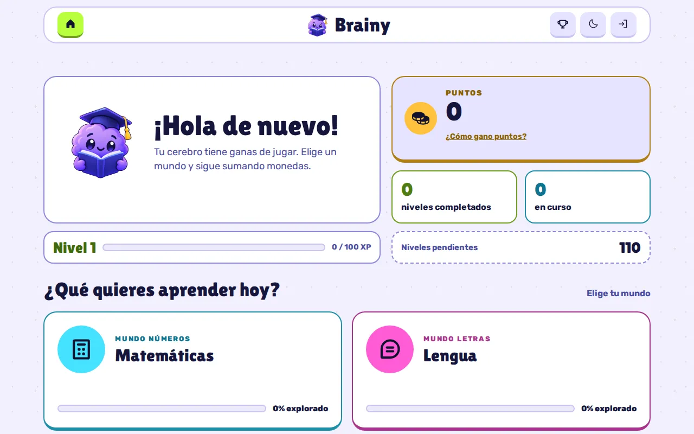
-
Cinco asignaturas
Matemáticas, Lengua, Natural Science, Social Science e English, con más de 1.500 preguntas.
-
Aprender, luego practicar
Cada tema tiene una explicación visual animada y niveles de 10 preguntas.
-
Puntos con sentido
Cada nivel da puntos una vez al día, para repartir el estudio en vez de repetir lo mismo.
-
Sin datos personales
Cuenta opcional sin correo, sin cookies ni analítica. También se puede jugar sin cuenta.
Nació como una alternativa gratuita y en español a plataformas que solo están en inglés, sin coste de alojamiento. Está hecha por Renzo Ramos.
- Web: renzoramosdev.github.io/Brainy-Site
- El código es privado; la web es pública.
Empezar
Con cuenta o sin cuenta
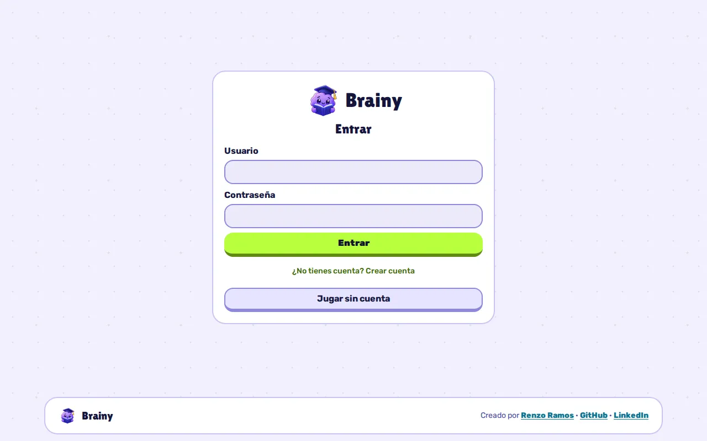
Al abrir Brainy aparece una tarjeta con tres caminos:
- Entrar
- Con usuario y contraseña.
- Crear cuenta
- Usuario (3 a 20 letras minúsculas, números, punto o guion bajo), cómo quieres que te llamen y contraseña (8 a 72 caracteres). No se pide correo.
- Jugar sin cuenta
- Entras al momento y el progreso se guarda solo en ese navegador. La elección se recuerda.
| Con cuenta | Sin cuenta | |
|---|---|---|
| Dónde se guarda el progreso | En tu cuenta, en cualquier dispositivo | Solo en ese navegador |
| Puntos diarios | Sí, con el día que marca el servidor | Sí, con el reloj del dispositivo |
| Tope diario | 1.000 puntos | Sin tope |
| Ranking | Sí | No |
| PokeBrainy | Sí | No |
Si ya has jugado sin cuenta y luego creas una, Brainy te ofrece «Llevar mi progreso actual»: tus estrellas y tus puntos pasan a la cuenta una sola vez (como mucho 5.000 puntos). La copia local solo se borra cuando la cuenta confirma que la ha recibido.
No hay recuperación de contraseña: si la olvidas, la restablece el responsable de la web.
La app
Inicio
- La mascota te saluda («¡Hola de nuevo!» o «¡Hola, <tu apodo>!»).
- Nivel con su barra de experiencia: subes un nivel cada 100 puntos.
- Puntos que tienes para gastar, con el enlace «¿Cómo gano puntos?».
- «¡Sobre disponible!» si tienes cuenta y 300 puntos o más.
- Niveles completados (3 estrellas), en curso (1–2) y pendientes.
- Tu puesto en el ranking, si tienes cuenta.
- Elige tu mundo: una tarjeta por asignatura con su color y el porcentaje explorado.
- Mis lecciones: cada lección con su progreso y un botón «Empezar».
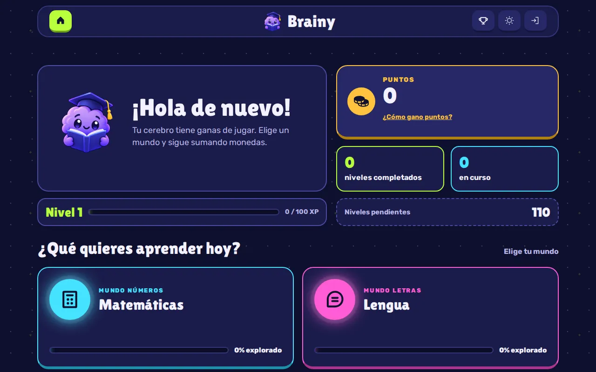
La barra superior lleva a Inicio, Ranking y PokeBrainy, cambia el tema y permite entrar o salir. En pantallas estrechas todo eso se agrupa en un menú. Si algo no se guarda, aparece «No se pudo guardar tu progreso. Revisa tu conexión.».
La app
Mundos y lecciones
Cada asignatura es un «mundo» con su color. Dentro hay lecciones, cada lección tiene temas y cada tema tiene niveles.
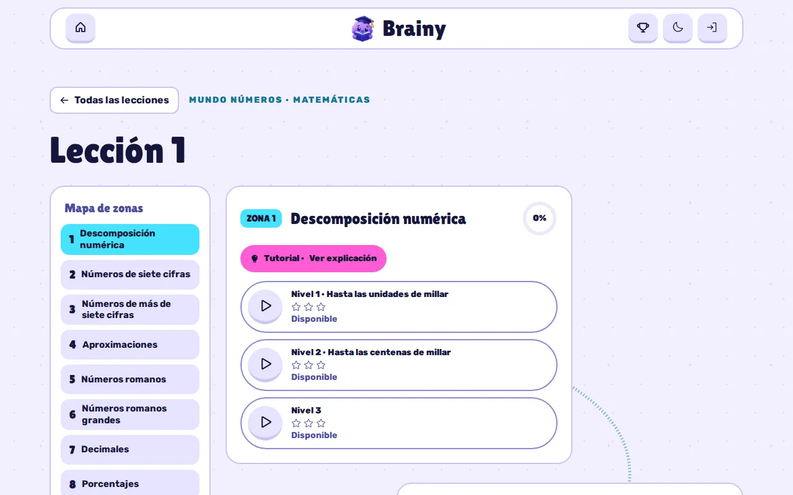
- Cada lección muestra sus estrellas conseguidas y un anillo de progreso.
- Un índice rápido salta a cada tema.
- Cada tema tiene «Tutorial · Ver explicación» y sus niveles, con las mejores estrellas y el estado del día: «Disponible» o «✓ Hoy: N pts».
- En Lengua, una banda «Etapa bonus» lleva al Taller de ortografía.
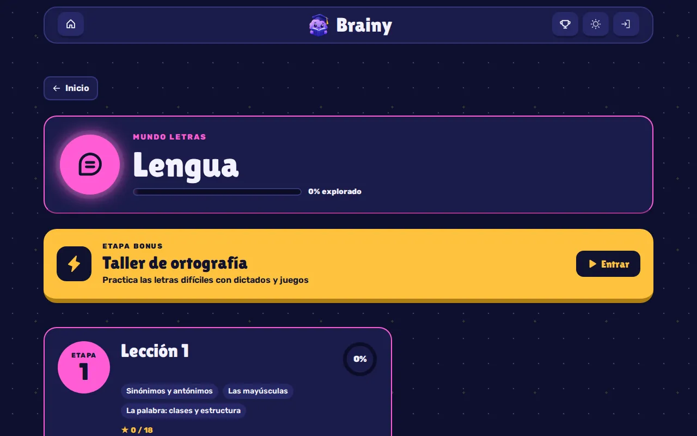
La app
Explicaciones visuales
Antes de practicar, cada tema se puede aprender paso a paso: «Paso n de total», un dibujo animado y el texto de la mascota («Brainy dice»). El último paso lleva a «¡A practicar!».
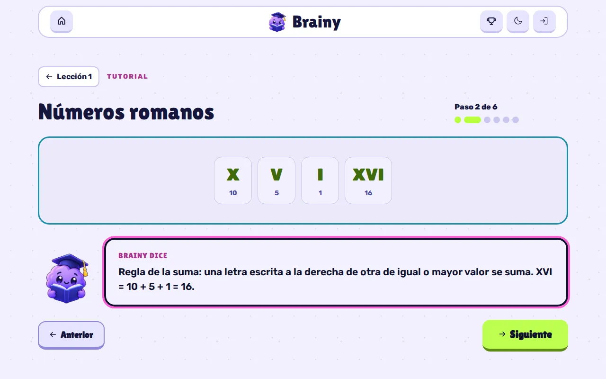
| Visual | Para qué sirve |
|---|---|
| Cuadrículas | Decimales y centésimas en cuadros de 10×10 |
| Fichas | Símbolos con su valor, como los números romanos |
| Palabras | Morfemas en bloques de colores con su nombre |
| Sílabas | La sílaba tónica resaltada |
| Tarjetas | Pista y respuesta que se giran al pulsarlas |
| Cadena | Pasos encadenados con flechas |
| Diagramas | 13 dibujos interactivos: ojo, oído, nariz, lengua, piel, neurona, sistema nervioso, células y niveles de organización |
| Multiplicación y división | Las cuentas en columna o en galera, animadas cifra a cifra |
| Área | Rectángulos de cuadraditos para la propiedad distributiva |
| Reescritura | Una operación resuelta línea a línea |
| Oración | Cada palabra con su categoría gramatical |
| Esquema | Un resumen con llaves al final de cada tema de Lengua |
| Foto | Fotos y mapas, sobre todo en Social Science |
Las animaciones de cuentas y oraciones tienen «🔁 Repetir animación». En los diagramas cada parte es un botón que muestra su información; el ojo hasta tiene «🌙 Apagar la luz» para ver cómo se dilata la pupila.
La app
El quiz
Cada nivel es una partida de 10 preguntas elegidas del banco del nivel.
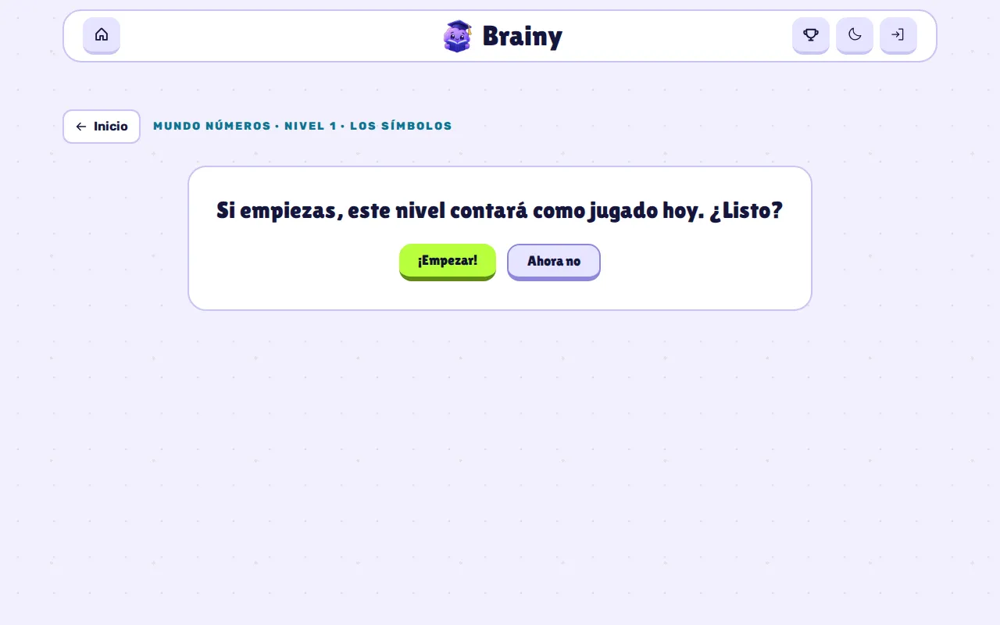
-
¿Listo?
Si el nivel aún da puntos hoy, avisa: «Si empiezas, este nivel contará como jugado hoy». Si ya los dio, puedes «Practicar» sin puntos.
-
Responde
Un solo intento por pregunta. Al momento ves «¡Correcto!» (+10) o «Incorrecto» con la respuesta buena, y siempre la explicación.
-
Resultado
«¡Nivel superado!» o «¡Sigue intentándolo!», con las estrellas, los aciertos, la precisión y los puntos.
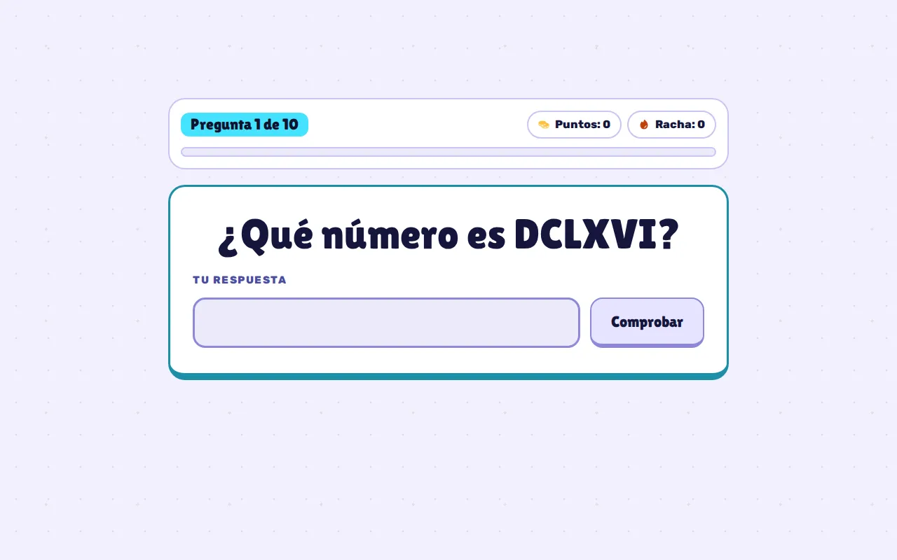
- Un panel muestra «Pregunta k de 10», los puntos y la racha de aciertos seguidos.
- Las preguntas y sus opciones se barajan cada vez, y se priorizan las que aún no has visto.
- Durante una partida con puntos no hay barra de navegación: se juega hasta el final.
- Las preguntas no se pueden seleccionar ni copiar.
La app
Tipos de pregunta
- Opción múltiple
- De 2 a 4 opciones, una correcta.
- Numérica
- Escribes el número; vale coma o punto decimal («3,5» o «3.5»).
- Varias correctas
- «Elige todas las respuestas correctas» y «Comprobar».
- Clasificar
- Repartes elementos en categorías.
Algunas preguntas llevan además:
- Una galera vacía para resolver la división como en el cuaderno.
- Un texto de lectura (comprensión lectora).
- Una audición en inglés: «🔊 Escuchar» la lee con voces británicas distintas para cada persona del diálogo, y al responder se muestra el texto. Sin voz inglesa en el dispositivo, aparece «Ver texto».
La app
Taller de ortografía
«Aprende la regla, escucha, escribe y comprueba. Las palabras que falles volverán al final de la ronda.» Se entra desde la etapa bonus de Lengua.
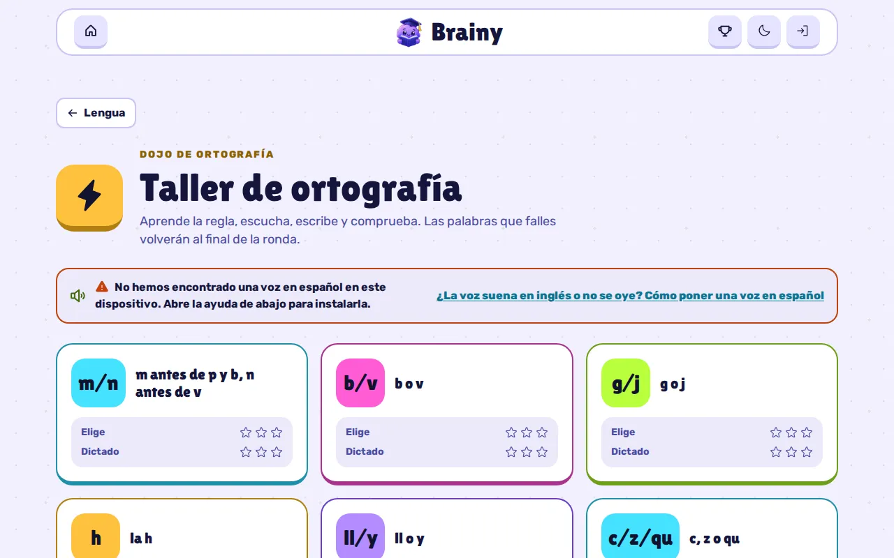
Tiene 9 reglas: m/n, b/v, g/j, h, ll/y, c/z/qu, r/rr, tildes y palabras clave, con 117 palabras en total. Cada regla explica sus puntos, da un truco y tres ejemplos.
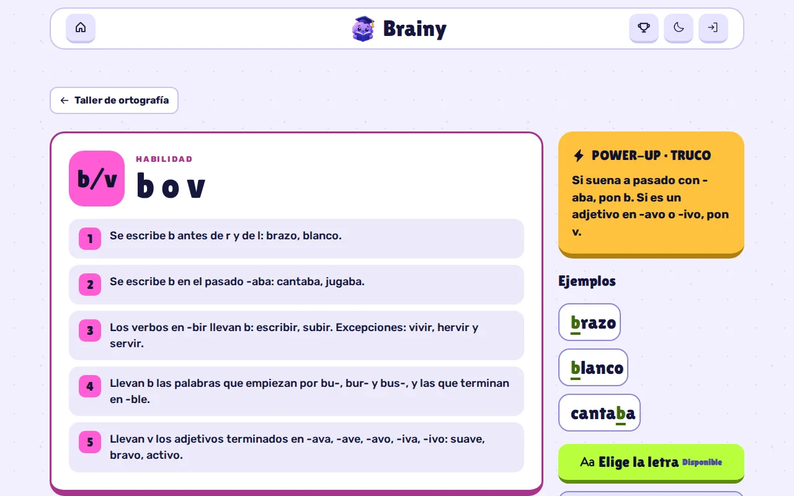
- Elige la letra
- La palabra aparece con un hueco y eliges la letra que falta (atajos de teclado 1 a 3).
- Dictado
- Brainy dice la palabra y luego una frase con ella; la escribes con un teclado de tildes en pantalla (á é í ó ú ü ñ). Sin voz española aparece «👀 Ver palabra».
- Cada ronda son 10 palabras al azar; las que fallas vuelven al final, sin puntuar.
- Da puntos y estrellas igual que el quiz, una vez al día por modo y regla.
- Un panel de ayuda explica cómo instalar una voz en español en tu sistema si la voz suena en inglés.
La app
Puntos y estrellas
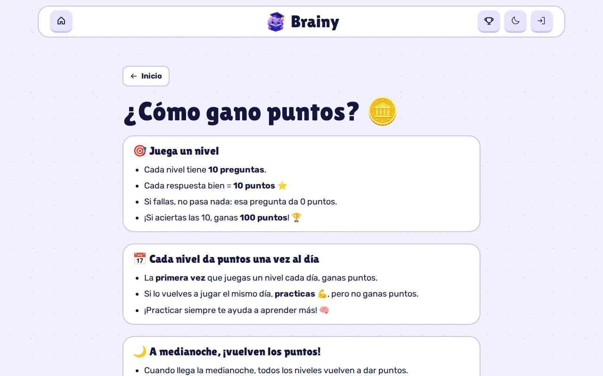
- 10 puntos por acierto: un nivel perfecto da 100.
- Una vez al día por nivel. Repetirlo el mismo día es práctica: 0 puntos, pero puedes mejorar tus estrellas. A medianoche (hora de Madrid) vuelve a dar puntos.
- Empezar cuenta como jugado: si lo dejas a medias, conservas lo ganado.
- Tope de 1.000 puntos al día con cuenta: «Hoy ya llegaste al máximo de 1.000 puntos. ¡Mañana más!».
| Aciertos | Estrellas |
|---|---|
| 90 % o más | ★★★ |
| 70 % o más | ★★ |
| 50 % o más | ★ |
| Menos del 50 % | Ninguna |
Con cuenta, es el servidor quien decide el día, los puntos y las estrellas, no el navegador. Los puntos sirven para subir de nivel (uno cada 100), para el ranking y para abrir sobres en PokeBrainy. Gastarlos no te baja de nivel ni de puesto.
La app
Ranking
- Los 20 mejores por puntos y, si no estás entre ellos, una fila más con «Tu posición».
- Los empates comparten puesto (1, 2, 2, 4).
- De cada jugador solo se ve su avatar, su apodo y su nivel: ni sus puntos ni su usuario.
- Solo con cuenta, y se actualiza en cada visita.
La app
PokeBrainy
Una colección de Pokémon que se llena estudiando. Solo con cuenta.
- Un sobre cuesta 300 puntos e incluye 3 Pokémon al azar entre 1.351 posibles, con la misma probabilidad cada uno.
- Hay una carta rara, «Brainy» graduado, con una probabilidad de 1 entre 2.000 por casilla.
- El sobre destella y gira antes de mostrar las cartas; las que no tenías llevan «¡Nuevo!».
- La colección muestra cada Pokémon con cuántas veces lo tienes, «Has descubierto X de 1351» y un buscador por nombre.
- Los nombres e imágenes vienen de PokéAPI; si no cargan, se ven el número y la mascota.
La app
Qué se puede aprender
54 temas, 110 niveles y más de 1.500 preguntas, más las 117 palabras del Taller.
| Asignatura | Temas | Niveles | Preguntas |
|---|---|---|---|
| Matemáticas | Números grandes, aproximaciones, romanos, decimales, porcentajes, distributiva, multiplicaciones, potencias, operaciones combinadas, estimaciones, divisiones, problemas, múltiplos y divisores | 34 | 396 |
| Lengua | Sinónimos y antónimos, mayúsculas, clases de palabras, acentuación, determinantes, artículo, sílabas, ortografía, morfemas, análisis morfológico y la noticia | 28 | 342 |
| Natural Science | Life processes, cells, levels of organisation, the five kingdoms, the five senses and the nervous system | 22 | 352 |
| Social Science | Relief, archipelagos, coasts, rivers and protected areas of Spain | 10 | 160 |
| English | Clothes, materials, comparatives, present simple, feelings, history of clothes, reading and listening | 16 | 288 |
Natural Science, Social Science e English están en inglés: el navegador no las traduce y los lectores de pantalla las leen con pronunciación inglesa. Sus explicaciones usan imágenes, trucos de memoria, un paso final de autoevaluación («Test yourself») y repaso en el segundo nivel.
Por dentro
Arquitectura
Una aplicación de una sola página (SPA) estática hecha con React 19, TypeScript, Vite y Tailwind CSS v4. Las cuentas, el progreso y el ranking viven en Supabase.
- React 19.3
- TypeScript 5.9
- Vite 8.3
- Tailwind 4.3
- shadcn/ui
- Motion 14
- Phosphor Icons
- supabase-js 2
- Vitest 4
- Stryker 10
- Rutas con
#(#/subject/math,#/quiz/…,#/taller…), para que funcione en GitHub Pages sin servidor. - Puertos y adaptadores: la autenticación, el progreso, las partidas, el ranking y PokeBrainy tienen cada uno una interfaz, un adaptador de Supabase y una versión falsa para los tests.
- Sin librería de estado global: hooks de React, y la puntuación del quiz es una función pura.
- Carpetas por dominio:
app,auth,content,quiz,taller,progress,leaderboard,pokebrainy,screens…, con cada test junto a su módulo. - Carga bajo demanda: cada pantalla y el cliente de Supabase van en su propio fragmento de código.
Por dentro
Cómo se escribe el contenido
Todo el temario son ficheros JSON en public/content/: uno por asignatura, el del
Taller y un índice. Para cambiar preguntas basta con editar el JSON; no hace falta tocar
código.
asignatura
└── lessons
└── topics (con su explicación paso a paso)
└── levels (un nivel = un quiz de 10 preguntas)
└── questions (id, type, prompt, explanation)- Una asignatura con
"available": falsese muestra como «Próximamente». - Un fichero con
"lang": "en"marca su contenido en inglés para los lectores de pantalla. - Cada explicación tiene de 1 a 12 pasos, cada uno con su texto y un visual. Si algo no es válido, la explicación se ignora, en vez de romper la página.
- Las preguntas no válidas se omiten; los tipos de pregunta son un registro al que se pueden añadir tipos nuevos sin tocar el motor del quiz.
- El
idde un nivel o de una palabra publicados nunca se cambia, porque el progreso lo usa. Cada nivel nuevo se da de alta también en el catálogo de la base de datos, y un test comprueba que coinciden. - Hay tests del propio contenido: por ejemplo, que las audiciones en inglés empiecen por «Listen.» o que las sílabas marcadas coincidan con la tónica.
Por dentro
Progreso y cuentas
- Con cuenta
- Cada partida pasa por el servidor: se abre, cada respuesta se registra y se cierra. El servidor decide si da puntos, el día, los puntos y las estrellas. Si una respuesta no llega por la red, se reintenta en orden sin duplicarse.
- Sin cuenta
- El progreso, los premios del día y el historial de preguntas vistas se guardan en el navegador y nunca se envían a ningún sitio.
En la cuenta se guarda:
- Tu perfil: usuario, apodo, puntos ganados y gastados, y avatar.
- Tus mejores estrellas por nivel.
- Tus partidas y respuestas (acierto o fallo, sin el texto).
- Tu colección de PokeBrainy.
Cada tabla tiene seguridad por filas: cada persona solo puede leer lo suyo, nadie sin sesión puede leer nada, y los puntos, las partidas y la colección solo los escribe el servidor. Las cuentas las crea una función del servidor que valida los datos.
Por dentro
Privacidad
- Sin cookies ni analítica.
- Sin correo ni datos personales: solo usuario, apodo y contraseña. La base de datos rechaza cualquier correo real.
- Las contraseñas las guarda Supabase cifradas; la app nunca las ve guardadas.
- La web solo habla con su propio origen y con Supabase. PokéAPI solo se usa en PokeBrainy, con sesión, sin credenciales.
- Las fuentes van incluidas en la app: no se carga nada de Google.
- Sin cuenta, nada sale del navegador.
Por dentro
Diseño
Un estilo «Arcade» de videojuego: botones gruesos que se hunden al pulsarlos, contadores tipo marcador y un mundo de color por asignatura, con un modo día y un modo noche.
| Mundo | Color |
|---|---|
| Matemáticas | Cian |
| Lengua | Magenta |
| Natural Science | Lima |
| Social Science | Oro |
| English | Violeta |
- Títulos en Lilita One y texto en Rubik, servidas desde la propia app.
- Iconos de Phosphor y componentes de shadcn/ui; los emojis solo aparecen en el contenido.
- El tema sigue al sistema hasta que eliges uno, y se aplica antes de pintar para que no parpadee.
- Animaciones con Motion y CSS, siempre respetando «movimiento reducido».
- Brainy, la mascota, aparece en el inicio, en las explicaciones y en los resultados.
Por dentro
Accesibilidad, rendimiento y SEO
Accesibilidad
- Contraste WCAG AA (4,5:1) en los dos temas, comprobado con tests.
- El color nunca es la única pista: siempre va acompañado de texto o de un icono.
- Foco visible, áreas táctiles de al menos 44×44 px y avisos que leen los lectores de pantalla.
- El contenido en inglés se marca como tal para que se pronuncie bien.
- Sin scroll horizontal desde 320 px de ancho.
Rendimiento
- Cada pantalla se descarga al abrirla. Antes, todo iba en un único archivo de 556 KB.
- Un presupuesto limita el JavaScript total comprimido.
- Tras publicar una versión nueva, si falla la carga de un fragmento antiguo, la página se recarga sola una vez.
SEO
- Título «Brainy · Estudia de forma interactiva», descripción, Open Graph con imagen para redes y datos estructurados.
- Cada pantalla cambia el título de la pestaña («Quiz · Matemáticas · Brainy»…).
robots.txtysitemap.xmlgenerados en el build; se indexa la portada.
Por dentro
Pruebas y calidad
- Unos 2.000 tests con Vitest y Testing Library, en 125 ficheros, junto al código que prueban.
- Golden files de los diagramas, del contenido y de algunas pantallas, que nunca se regeneran solos.
- Tests del contenido: bancos de preguntas, lecciones y que el catálogo de niveles coincida con la base de datos.
- Pruebas de mutación con Stryker sobre lo que se cambia, con un objetivo de más del 95 %.
- TypeScript estricto, y el build no sale si los tipos fallan.
- TDD obligatorio: ningún código sin un test que falle antes.
Por dentro
Publicación
El código vive en un repositorio privado y la web se publica en otro público, Brainy-Site, con GitHub Pages. Así la web es pública y se puede indexar, pero el código, los tests y el historial siguen privados.
-
Push a main
Cada cambio que llega a
mainlanza el despliegue. -
Tests y build
Comprueba la configuración, pasa todos los tests y construye la app. Si algo falla, no se publica nada.
-
Publicar
Sube solo la carpeta construida al repositorio del sitio, que la sirve con GitHub Pages.
Por dentro
Cómo se construyó
Con especificaciones de OpenSpec: 72 cambios propuestos, implementados y archivados entre el 4 y el 21 de octubre de 2026, y 37 especificaciones vigentes con unos 550 requisitos.
| Fecha | Qué llegó |
|---|---|
| 4 oct | Primera versión sin servidor: explicaciones visuales, números romanos, morfemas, sílabas y tilde, y modo oscuro |
| 5–7 oct | Los cinco sentidos y sus diagramas, operaciones, gramática, el Taller de ortografía y la voz en español |
| 11–12 oct | Nuevos tipos de pregunta y el rediseño completo con la mascota y el nombre Brainy |
| 16–17 oct | División en galera y la identidad visual «Arcade» |
| 18 oct | Cuentas, progreso sincronizado, modo sin cuenta, ranking, English y Social Science |
| 19 oct | PokeBrainy y los avatares |
| 20–21 oct | Más temas de Matemáticas y Ciencias, y los puntos diarios decididos por el servidor |
Por dentro
Limitaciones conocidas
- No hay recuperación de contraseña desde la app.
- No se puede ocultar uno del ranking, y los avatares los asigna el responsable.
- Sin cuenta, el progreso se pierde al borrar los datos del navegador, y el día depende del reloj del dispositivo.
- El dictado y las audiciones dependen de que el sistema tenga voces en español o inglés; si no, se ofrece leer el texto.
- Las respuestas numéricas no admiten separador de miles.
- No funciona sin conexión.
- Solo se indexa la portada: las pantallas con
#no aparecen en buscadores. - No hay pruebas de extremo a extremo ni linter.
Por dentro
Créditos
Brainy está hecha por Renzo Ramos (RenzoRamosDEV). Los datos de Pokémon de PokeBrainy son de PokéAPI. Las fuentes Lilita One y Rubik tienen licencia SIL OFL 1.1.
↑ Volver arriba